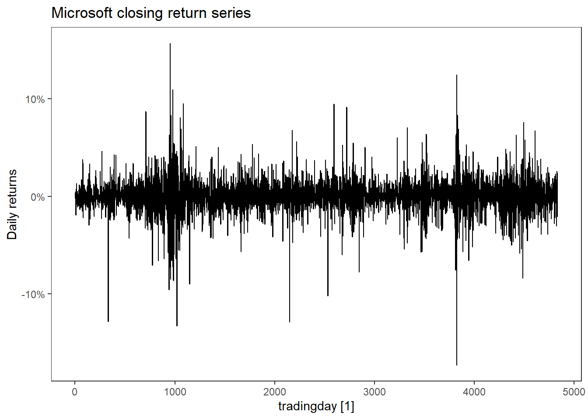

Volatility forecasting
All models considered so far have had a constant residual variance, i.e.\sigma^2 in \varepsilon\sim\text{WN}(0,\sigma^2). This is also true for the models we will consider in this chapter, but we allow the conditional variance, or the volatility, to vary. That is the variance conditioned on the past of the time series of interest. We will define it more closely below.
Volatility can be an important concept for investment, security valuation, risk management and monetary policy making. When it is interpreted as uncertainty, it becomes a key to many investments decisions and portfolio creations (Poon and Granger, 2003). The models we consider is used a lot for financial time series, such as stock returns, currency exchange rates, etc.
Stylized facts about financial return series
McNeil et al (2005) list stylized facts about financial times series:
- SF1: Return series are not independent and identically distributed although they show little autocorrelation.
- SF2: Series of absolute or squared returns show profound autocorrelation.
- SF3: Conditional expected returns are close to zero.
- SF4: Volatility appear to vary over time.
- SF5: Return series are leptokurtic or heavy-tailed.
- SF6: Extreme returns appear in clusters.
Let us consider a financial time series and see if these stylized facts hold for that. We will look closer at the Microsoft stock and use the tidyquant package for downloading the data starting from 2005 until the newest available data point. Since the stock exchange is closed on some days, we index the time series by trading day (i.e. the row number).
library(tidyquant) # Package getting stock data
library(tidyverse)
library(fpp3)
MSFT <- tq_get("MSFT",
get = "stock.prices",
from = as.Date("2005-01-01")) %>%
select(date, close) %>%
mutate(tradingday = row_number()) %>%
as_tsibble(index = tradingday) %>%
mutate(return = difference(close)/close)
MSFT %>% autoplot(return) +
scale_y_continuous(labels = scales::percent) +
labs(y = "Daily returns",
title = "Microsoft closing return series")
Let us also include autocorrelation plots of the returns and the squared returns.
MSFT %>% ACF(return) %>% autoplot() + labs(y = "ACF of returns")
MSFT %>% ACF(return^2) %>% autoplot() + labs(y = "ACF of squared returns")
MSFT %>% ggplot(aes(sample = return)) + geom_qq() +geom_qq_line()
MSFT %>% ggplot(aes(x = return)) + stat_density(fill = "blue", alpha = .2)
Here we clearly see that the returns have little autocorrelation (SF1), but the squared returns have a lot (SF2). Conditional returns is maybe not so easy to quantify, but the mean return of MSFT is 0.034\% \approx 0 (SF3). We can clearly see from the time plot of the returns that the volatility varies across time (SF4) and that the extreme returns tend to cluster together (SF6). Since we are using trading days for the time index, it is a bit hard to tell when these events occured, but the first big cluster (t\approx 1000) is around the financial crisis in 2008-09 and the second big one is around 2020 (t\approx 3900) when covid-19 went pandemic. Leptokurtic means that the kurtosis is positive (here it is 9.8). We can see from the qq-plot that the distribution is heavy tailed in both ends compared to a Gaussian distribution (SF5). It is also very concentrated around zero except for the extreme observations.
These stylized facts are dynamics we want a good model of financial returns to be able to capture.
Defining volatility mathematically
Let Y_t be a time series stochastic variable associated with time t and let \mathcal F_t denote all the past history of the time series up to and including time t, i.e. \mathcal F_t = \{\ldots, Y_{t-2},Y_{t-1}, Y_t\}. Then Y_t|\mathcal F_t is a constant (not stochastic). If the time series is stationary, the expectation is \mu = \mathbb E Y_t and the variance is defined as \sigma^2 = \mathbb E (Y_t-\mu)^2= \mathbb E Y_t^2 - \mu^2. We define the volatility as the conditional standard deviation of the times series, conditioned on its history. Thus, the squared volatility is the conditional variance, given by \sigma_t^2 = \sigma_{t+1|t}^2 = \mathbb E\big[ (Y_{t+1}-\mu)^2|\mathcal F_{t}\big].
The \mathcal F_t is called a sigma algebra, which is a quite complex mathematical structure, but you can think of it as simply the infinite history of the time series.
Scratching the surface of GARCH
We will here exclusively focus on the most basic volatility models in the GARCH family. The list of different model specifications available in the rugarch package is
- Standard GARCH (sGARCH)
- Integrated GARCH (iGARCH)
- Exponential GARCH (EGARCH)
- GJR-GARCH (gjrGARCH)
- asymmetric power ARCH (apARCH)
- Family GARCH (fGARCH)
- Component sGARCH (csGARCH)
- Multiplicative Component sGARCH (mcsGARCH)
- Realized GARCH (realGARCH)
- Fractionally integrated GARCH (fiGARCH)
We will focus on the so-called standard (G)ARCH. If you are interested in digging deeper into some of the other models, see e.g. the package documention. This list is just scratching the surface of available GARCH-type models. The father of the original GARCH model, Tim Bollerslev, has published a Glossary of ARCH-GARCH models (Bollerslev, 2008) to give an overview of all the acronyms and abbreviations used for these type of models, but this has not been updated since 2008 (as far as I know). Bollerslev(2023) recently published a paper entitled the Story of GARCH which also discuss the many specialized GARCH models.
The volatility \sigma_t is the quantity of interest in this chapter. In the next section we will introduce the first volatility model; ARCH models before turning the generalized ARCH models (or standard GARCH).
References
- Bollerslev, T. (2008). Glossary to arch (garch). CREATES Research paper, 49.
- Bollerslev, T. (2023). The story of GARCH: A personal odyssey. Journal of Econometrics.
- McNeil, A. J., Frey, R., & Embrechts, P. (2005). Quantitative risk management: concepts, techniques and tools-revised edition. Princeton university press.
- Poon, S. H., & Granger, C. W. J. (2003). Forecasting volatility in financial markets: A review. Journal of economic literature, 41(2), 478-539.